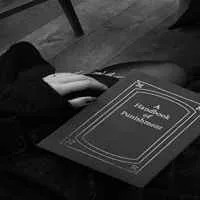

儒家學說與西方民主（中英對照）
NT$ 50

墨子集解
NT$ 600
墨子小取篇集證及其辨學
NT$ 260

墨子非儒篇彙考
NT$ 280

老子道德經
NT$ 200
淮南鴻烈集解
NT$ 1200

老子心印
NT$ 300
費氏古易訂文
NT$ 800

蘦硯齋雜著兩種（莊子章旨，莊子音一卷）
NT$ 320

方東美先生哲學嘉言
NT$ 500
美學與藝術哲學論集
NT$ 580

帛書老子校劉施培「老子斟補」疏證
NT$ 550

帛書校王弼本諟正道德經本誼徽音
NT$ 0
周易詁辭
NT$ 440

莊子詁義全稿
NT$ 420
周易詁辭(精)
NT$ 600
莊子詁義全稿
NT$ 520
莊子的幽默禪
NT$ 320

易經與人生（增訂再版）
NT$ 0
真理的極限
NT$ 200

次易原理（上卷）（BOD）
NT$ 1000

次易原理（下卷）（BOD）
NT$ 1100

易經與人生（增訂三版）
NT$ 600

先秦儒學之人倫思想（BOD）
NT$ 350
道家文化研究
NT$ 6000

陳立夫先生孔孟學說論叢
NT$ 420
漢英對照老子道德經
NT$ 240

道德經異述
NT$ 360

莊子新說
NT$ 720

愛上老子：反向思維的管理與對策
NT$ 500

中庸研究論著集
NT$ 400
易經的管理思想
NT$ 280

法家管理思想
NT$ 340

周濂溪學說發微
NT$ 260

道學探微
NT$ 180

錦言警句
NT$ 500

忍經
NT$ 760

應用家庭倫理學
NT$ 440

治家瑰寶
NT$ 260

智慧的鑰匙
NT$ 150

平衡的超越
NT$ 150

太極氣功
NT$ 0
如何掌理方向
NT$ 320

理存事中‧時習致用：顏習齋哲學思想的展現與落實
NT$ 260